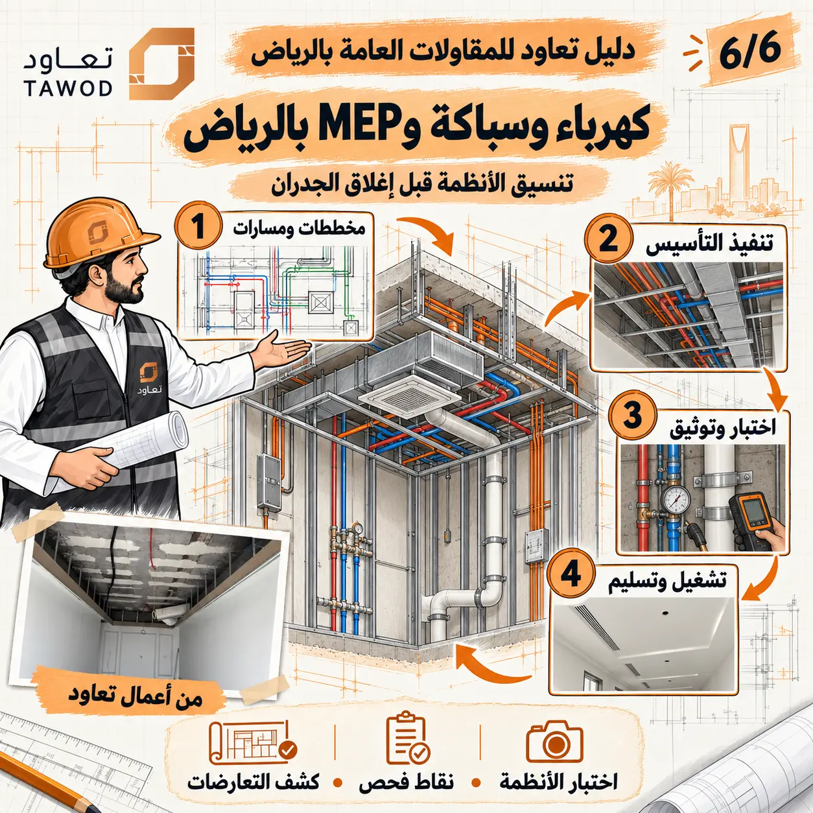

ما هي أعمال MEP؟ هي اختصار للأعمال الميكانيكية والكهربائية والصحية، وقد تضم بحسب المشروع التكييف والتهوية ومكافحة الحريق واللوحات والقوى والإنارة والتيار الخفيف والتغذية والصرف وأنظمة أخرى. أما البحث عن كهرباء وسباكة وMEP بالرياض فيحتاج أولًا إلى تحديد الأنظمة الداخلة فعليًا في النطاق.
القيمة ليست في جمع تخصصات كثيرة تحت اسم واحد؛ بل في تنسيقها مع الهيكل والأسقف والواجهات والنجارة والأثاث، ثم اختبار كل نظام قبل أن يصبح الوصول إليه مكلفًا. ويمكن الرجوع إلى دليل أعمال الكهرباء ودليل تأسيس السباكة للتفاصيل المتخصصة.
ما هي أعمال MEP؟
الميكانيكا قد تشمل التكييف والتهوية والمضخات والأنظمة المرتبطة، والكهرباء تشمل مصادر التغذية واللوحات والكابلات والإنارة والحماية والأنظمة منخفضة التيار بحسب المشروع، أما السباكة فتشمل التغذية والصرف والتهوية والتجهيزات. تُحدد الأنظمة والمرجعيات والمسؤوليات في المخططات والمواصفات والعقد.
ميكانيكا
أحمال ومعدات ومسارات هواء أو مياه وفتحات وصيانة حسب النظام.
كهرباء
لوحات وأحمال وكابلات وإنارة وحماية وأنظمة خاصة حسب النطاق.
سباكة
تغذية وصرف وتهوية وميول ومحابس ونقاط وتجهيزات.
تنسيق
مناسيب وفتحات ووصول للصيانة وعلاقة بالإنشاء والتشطيب.
المرحلة الأولى: المخططات والنقاط والمسارات
تبدأ المراجعة من الاستخدام والأجهزة والأحمال والمعدات ومواقع النقاط، ثم من مسارات الربط ومناسيبها وفتحاتها. يجب أن تكون المخططات المستخدمة متوافقة مع آخر توزيع معماري وتصميم داخلي، لأن نقل مطبخ أو حمام أو وحدة تكييف يغير أكثر من نظام.
تُراجع كذلك جداول اللوحات والمعدات والمواصفات ومسؤولية التوريد والتوصيل والتشغيل. أي عنصر يورده المالك يحتاج بياناته في الوقت المناسب؛ فاختلاف قدرة جهاز أو موقع توصيلة قد يفرض تعديلًا على الكابل أو القاطع أو الأنبوب أو فتحة الصيانة.
كشف التعارضات قبل التنفيذ
يحدث التعارض عندما يحاول نظامان استخدام الحيز نفسه، أو عندما يمر المسار في عنصر لا يسمح بالفتحة، أو عندما تصبح الصيانة غير ممكنة بعد التشطيب. يُحل ذلك على المخطط أو النموذج واجتماع التنسيق قبل وصول الفرق إلى الموقع.
تُعطى الأولوية وفق قيود المشروع: العناصر الإنشائية، الميول المطلوبة، المسارات الأكبر، الارتفاع الصافي، الوصول والصيانة، ثم التفاصيل المعمارية. لا توجد أولوية ثابتة لكل حالة؛ ويعتمد القرار المختصون وفق المخططات والمواصفات وما ينطبق من منظومة كود البناء السعودي الرسمية.
المرحلة الثانية: تنفيذ التأسيس والأعمال المخفية
تشمل المرحلة تثبيت الحوامل والعلب والمواسير والأنابيب والمصارف والفتحات والمسارات حسب النظام. تُراجع المواد قبل التركيب، ثم المواقع والمناسيب والدعم والحماية والفواصل. ويحافظ الفريق على نظافة النهايات وإغلاقها مؤقتًا حتى لا تدخل إليها مخلفات الموقع.
يُنسق التنفيذ مع أعمال الجدران والعزل والبلاط والأسقف. وفي المناطق الرطبة تُحسم علاقة مواسير التغذية والصرف بطبقات العزل والميول. أما الكهرباء فتحتاج فصلًا واضحًا للدوائر والمسارات والحماية وعدم دفن الوصلات أو العناصر التي يجب أن تبقى قابلة للوصول بحسب التصميم.

المرحلة الثالثة: الاختبار والتوثيق قبل الإغلاق
يختلف الاختبار حسب النظام؛ فقد تشمل الأعمال اختبارات ضغط أو تسرب أو عزل أو استمرارية أو تشغيل أو تدفق وفق المخططات والمواصفات وتعليمات المختص. المهم أن يُحدد معيار القبول والأداة والمدة والمسؤول والنتيجة قبل الإغلاق، لا الاكتفاء بعبارة «تم الاختبار».
تُلتقط صور عامة وقريبة مرتبطة بالمكان، وتُسجل أي تعديلات على المسار أو النقطة. ثم تصدر موافقة الإغلاق للمنطقة المحددة. إذا بقيت ملاحظة، توضح حدودها وتأثيرها بدل السماح لباقي الفرق بتغطية العمل ثم العودة إليه.
تنسيق MEP مع التشطيبات والديكور
المستخدم يرى المفتاح وفتحة التكييف والخلاط والمصرف، لكنه لا يرى المسار خلفها. لذلك تُراجع محاذاة العناصر وارتفاعاتها وعلاقتها بالبلاط والكسوة والأثاث. كما تُحدد أغطية الوصول وفتحات الصيانة داخل السقف أو النجارة بحيث تكون عملية ومتناسقة قدر الإمكان.
قبل قص الرخام أو تصنيع الخزانة أو إغلاق الجبس، تؤخذ القياسات النهائية للنقاط المؤثرة. ويُمنع تعديل خدمة لتناسب التشطيب من دون مراجعة أثره الفني؛ فالتنسيق يحافظ على الأداء والمظهر معًا.
المرحلة الرابعة: التشغيل والتسليم
يشمل التشغيل التحقق من عمل المعدات واللوحات والنقاط والمحابس والمصارف والأنظمة المندرجة في العقد، ثم معالجة الملاحظات. تُسمى اللوحات والدوائر والمحابس، وتُجمع كتيبات وضمانات ونتائج اختبارات ومخططات معدلة متاحة وفق نطاق المشروع.
يفيد تدريب المستخدم أو مسؤول الصيانة على مواقع الفصل والتشغيل والتنظيف الدوري. التسليم الجيد لا يكتفي بأن يعمل النظام لحظة الفحص؛ بل يجعل تشغيله وصيانته وفهم حدوده أكثر وضوحًا بعد مغادرة فريق التنفيذ.
كيف تختار مقاول MEP بالرياض؟
قارن نطاق الأنظمة والفريق والمخططات وطرق التنسيق والاختبار والتوثيق، واسأل عن مشروع مشابه من حيث النوع والحجم. راجع مسؤولية المواد والمعدات والتوصيلات والبرمجة والتشغيل، ولا تقارن سعر كهرباء وسباكة قبل توحيد عدد النقاط والمواصفات والاختبارات والاستثناءات.
تحتاج مراجعة أو تنفيذ أعمال MEP؟
أرسل نوع المشروع والمرحلة الحالية والمخططات أو الصور المتاحة، ليتم تحديد الأنظمة والنقاط والتعارضات والاختبارات المطلوبة ضمن نطاق واضح.
أرسل مخططات الأنظمةتابع أدلة الأعمال الكهروميكانيكية MEP
انتقل إلى الدليل المحوري أو الأدلة المرتبطة، ثم إلى الخدمة عندما تصبح جاهزًا للتنفيذ.